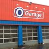
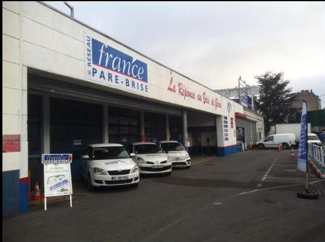
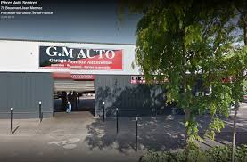

Experience professionnel :
Mai - 2016:
En 2016 j'ai effectuer un stage de 4 semaines chez O'garage de pierrefitte sur-seine. Les tâches que j'ai effectuer durant ce stage sont les suivantes : Pneumatiques, Depose repose du des disquettes et plaquettes, Depose repose de la boite de vitesse...
Adresse : Rue des Rouges Monts, 93380 Pierrefitte-sur-Seine
Octobre - 2017:
En 2017 j'ai effectuer un stage de 5 semaines chez Speedy de Staints. Les tâches que j'ai effectuer durantce stage sont les suivantes : Pneumatiques, Depose repose du des disquettes et plaquettes, Depose repose de la boite de vitesse...
Adresse : 111 avenue de Stalingrad 93240 Stains
Fevrier - 2018:
En 2018 j'ai effectuer un stage de 3 semaines chez G.M auto de Pierrefitte-sur-Seine. Les tâches que j'ai effectuer durantce stage sont les suivantes : Pneumatiques, Depose repose du des disquettes et plaquettes, Depose repose de la boite de vitesse...
Adresse : 68 Boulevard Jean Mermoz, 93380 Pierrefitte-sur-Seine